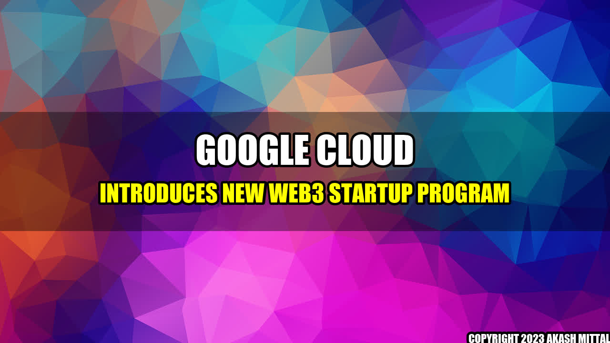

Google Cloud Introduces New Web3 Startup Program

Are you an entrepreneur looking to build the next big thing in Web3? Then you might be interested in Google Cloud's new startup program aimed at supporting blockchain and cryptocurrency projects.
The program, announced in late April, is a testament to the growing popularity and potential of Web3 technologies. With more and more individuals and businesses intrigued by the possibilities of blockchain and decentralized applications, it's no wonder that tech giants like Google are getting involved.
Google's Web3 startup program offers a range of resources and support to help innovators bring their ideas to life, including:
- Access to Google Cloud infrastructure and tools
- Technical training and mentoring from Google experts
- Networking opportunities with experts and other startups in the Web3 space
- Potential funding and investment opportunities
But what kind of startups might benefit from this program? Here are a few real-life examples:
- Celo: This blockchain-based payments startup recently raised $40 million in funding and has already helped people send and receive money in over 100 countries.
- NFT.storage: This project from the team behind the popular IPFS protocol makes it easy for creators to store and manage their NFTs (non-fungible tokens) on the decentralized web.
- Ocean Protocol: This platform allows developers to build data marketplaces that connect data providers with consumers in a secure, privacy-preserving way.
By joining Google Cloud's startup program, up-and-coming companies like these can benefit from the expertise and resources of one of the biggest tech companies in the world. And, of course, Google stands to gain as well: by nurturing new Web3 startups, the company can stay at the forefront of emerging technologies and potentially even shape their development.
Conclusion
- The Google Cloud startup program for Web3 ventures offers founders access to infrastructure and support from the tech giant.
- Real-life companies like Celo, NFT.storage, and Ocean Protocol could benefit from this program, as they build solutions in the blockchain and cryptocurrency space.
- By fostering Web3 startups, Google can keep a pulse on emerging technologies and potentially influence their development.
References and Further Readings
Hashtags
#GoogleCloud #Web3 #blockchain #cryptocurrency #startups
Akash Mittal Tech Article
Share on Twitter Share on LinkedIn